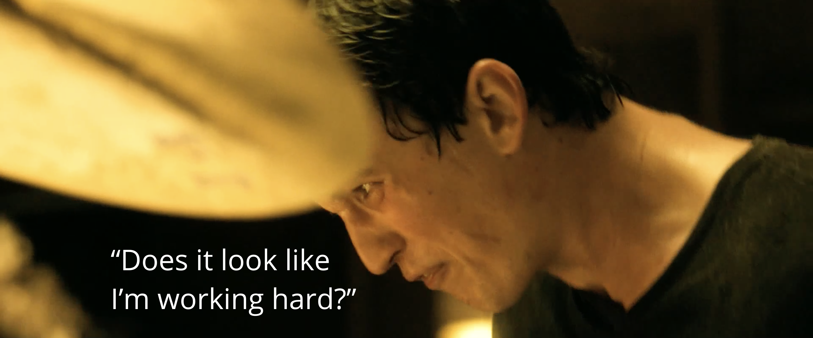
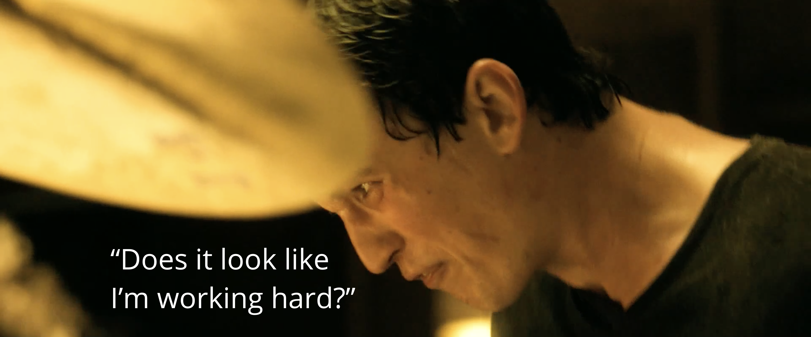

Review: Great Hands for a Lifetime by Tommy Igoe
Posted on June 19, 2022

Sometimes I wonder if Tommy has ever read my “Jazz Crimes” post. There’s a very good chance he has — my article is one of the first things that shows up in Google if you punch in “tommy igoe jazz crimes”.
It’s a bit of an exciting thought… well, more of a nerve–racking one if he’s read the first version of that post. Tommy, if you’ve read that and are now reading this, I really should apologize. The original write–up was some of the most turgid and scatterbrained writing I’ve ever produced. I feel sorry for anyone who read that.
I guess I’ll give myself a shot at redemption by writing about Tommy again, this time disregarding any internet drama bullshit that I can’t be bothered with. Since the last post before my coding hiatus had me talking about why so many YouTube drumming videos are garbage, let’s talk about the last great drumming DVD ever made: Great Hands for a Lifetime.
Great Hands for a Lifetime is a rather monstrous four–hour video produced by Tommy and released in early 2010 (I think). The crux of the DVD is the namesake “Lifetime Warmup”, a warmup regime that also works to provide a sort of benchmark for the technical ability of your hands (or, as Tommy puts it, “an amazing routine that will do great things for your hands and give you a fresh awareness of your own technical facility and limitation”).
The warmup essentially uses a double stroke roll to connect different licks together, mainly rudiments (as well as what I call “non–rudiments”: licks that aren’t on the list of 40 but aren’t often regarded as hybrids either).
Half of the video concerns the warm–up, breaking down each part and teaching you how to string it all together, while the other half features Tommy instructing you on the fundamentals of drumming: proper grip and technique, as well as how to play the basic motions of drumming. The double stroke roll in particular gets an extended demonstration.
Great Hands works toward an interesting audience; I would not call it a day–one drum lesson. There’s an expectation that going into the video, you already know how to read music, and are knowledgeable in the basics of rhythm (time signatures, different subdivisions, and tempo changes, not to mention dynamics). As such, I think Great Hands might be too much for someone who has never picked up a pair of sticks before.
Rather, I look at the DVD as a gut check for the type of player who’s been messing around on the kit for a year or two but hasn’t spent quality time with an instructor. Or, as in my case, a gut check for the kind of player who’s far removed from their time with a teacher.
When I first went through Great Hands, I had been playing for about 15 years, but I was curious about the content of the project since it’s a highly regarded DVD (and one of the last ever produced). And I did enjoy going through it; it was effective at putting me through my paces, and there is a lot of practice material in the video. I still watch snippets from time to time — it’s very helpful for getting back into the swing of things after I’ve taken a week or two off from playing/practicing. And the Lifetime Warmup is good fun to play, although it’s tough for me to go through the full version cold turkey without any preparation (and there’s a brutal five–minute version that I can’t imagine is an effective warmup for anyone who’s not gigging every night).
The video does have a bit of philosophizing that leaves me kinda uneasy. In his opening spiel, Tommy encourages you to keep an open mind toward different approaches, methods, and techniques regarding music, while cautioning against getting too caught up in the “right” way to play (scare quotes his).
A somewhat esoteric example is used of this Afro–Cuban/Latin thing Tommy heard about once where the fingers scratch the head of a snare drum. Maybe a more accessible idea would be the classic heel up/heel down discussion, or perhaps what exact grip to use. I can think of an infamous video that features a windbag drummer declaring French grip to be useless while also calling it German grip. I guess not researching basic things (while also having zero perspective) will get you onto YouTube’s most popular drumming platform.
Despite the importance of keeping an open mind, Tommy also routinely makes it clear that there is indeed a right and a wrong way to play the drums. In fact, about two minutes after his opening monologue, you’ll hear Tommy say “this is wrong” for the first of many times during his demos.
I can understand if the advice seems a little contradictory. I think I’ve come to the right conclusion, which is that I shouldn’t be too prejudiced while also having some discernment in what I take seriously as a drummer. It’s downright ignorant to bash on the French grip, but you must also accept that there are ways to play drums that will make your life needlessly difficult and should be avoided.
Since I’ve (probably) taken away the right information, maybe this isn’t too much of an issue, but Tommy could have been a little clearer. I have a bit of a bigger problem with Tommy’s attitude toward the Rudiments. He’s very receptive to them, discouraging drummers from regarding the rudiments as being old–fashioned and marching–oriented.
The problem is that the rudiments are, by their very nature, both old–fashioned and marching–oriented. Many of the rudiments (especially the ones talked about in the DVD) were developed by marching snare drummers decades, maybe even 100 years before the modern drum set came together.
Tommy does make it clear that the video is not a rudiment method since he doesn’t talk about every rudiment nor what to do with them on the drum set. It just seems like he’s a bit overeager towards their embrace as if a lick is given objective importance to the drum set player just because it’s a rudiment. Ok, maybe I’m extrapolating here... but the reality is that, as much as we all love the paradiddle, many drummers forget about the 20 other rudiments no one ever uses since they’re trash.
To me, the proof is in the pudding: Tommy doesn’t talk about every rudiment because not every rudiment is worth talking about, whether it applies to the Lifetime Warmup or not (he does bring up a few licks that aren’t part of the routine). Even in the e-book PDF that comes with the DVD, Tommy describes a few rudiments as “not good drumset rudiment[s] at all”.
Other ways in which Tommy proves my point include his use of a different rudiment classification system, which he probably created since the one on the list of 40 isn’t very good. He also talks about the ruff*, one of those “non–rudiments” I mentioned earlier, which not many drummers know about in this day and age, probably because it’s not on the list of 40 (and was in fact mangled to form the single stroke four and single stroke seven).
I do think Tommy has a valuable perspective to share, so I just wish he was a bit more frank about what the rudiments are and what they offer to a drum set player in the 21st century. I actually think he presents the rudiments with the right angle: using them more as conditioning patterns rather than something you try to use to make music on the kit. There are many valuable patterns in the list of 40, and there are just as many that most drummers don’t ever consider, for good reason.
At the end of the day, these are little more than gripes as I don’t think they significantly hurt the DVD’s effectiveness — it’s still a well-produced and coherent project. Overall, Great Hands instills a healthy attitude towards drumming despite some occasional hokeyness. Some people get irked when Tommy downplays the importance of flashy playing, but he’s played on more records with more artists than most of the schmucks on Instagram who go try to go viral by vomiting all over their drum set.
In fact, it almost seems like a certain (sullen) filmmaker watched Great Hands for a Lifetime and proceeded to write a screenplay built around doing the opposite of everything Tommy says, creating a rather deluded and dour jazz melodrama.
Don’t believe me? Well, here I present the world’s lamest art project. You’ll probably recognize the screenshots. See if you can figure out where the quotes come from:
 

It’s uncanny really.
*Tommy defines a ruff as a short single–stroke roll ending with an accent. Overall, this might be the best definition to use in the 21st century, but maybe I'll talk about this more at a later date...
Tags: 2022 • Review • Tommy Igoe